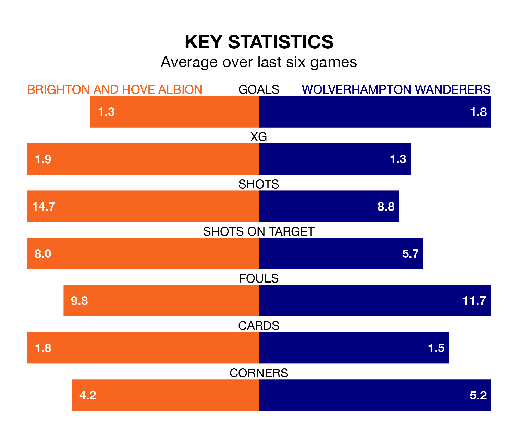

Brighton and Hove Albion are heavy favourites to keep all three points at home in Monday's late kick-off against Wolverhampton Wanderers.
Brighton, who sit eighth in the Premier League with 20 games played, are priced at 1.6 to seal victory at the American Express Community Stadium.
Sitting three places and three points behind them in the table, Wolves are 4.7 to win with *Betting Company*, while the draw is at 4.0.
With 38 goals in 20 games so far this season, Brighton are scoring more than average in the league with 1.9 goals per game. But they are conceding more than average too, letting in 33 goals at a rate of 1.6 per game.
Wolves, meanwhile, are average scorers, with 1.5 goals per game. They have conceded 1.6 goals per game.
In the last 10 years, Brighton and Wolves have played each other on 17 occasions. Brighton won seven of them, Wolves three, and they drew seven times.
On average, Brighton scored 1.6 goals and Wolves 0.8 in those matches.
Their last meeting was on August 19, when Brighton won 4-1 away.
Albion are in mixed form in the Premier League, with two wins and three draws from their last six games.
With four wins and a draw over that period, the away side's form is better – they have taken 13 points from 18, compared to the hosts' nine.
In Hee-Chan Hwang, Wolves have one of the league's most on-form strikers so far this season. He has notched 10 goals in 20 appearances, to sit sixth in the scoring charts.
His goal rate of one every 145 minutes is quicker than that of João Pedro, Brighton's top scorer with a goal every 163 minutes, and a total of seven goals in 20 games.
Brighton's last match was on January 2, a 0-0 draw against West Ham United.
Wolves beat Everton 3-0 last time out, on December 30, with Craig Dawson, Matheus Cunha and Max Kilman on the scoresheet.
Updated: 13:09 (UTC), 17/01/24